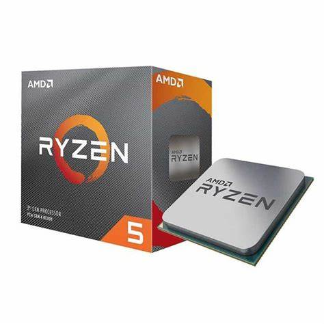
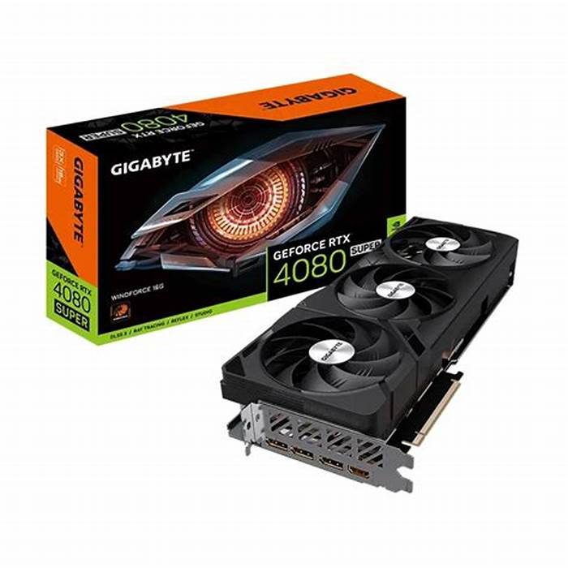
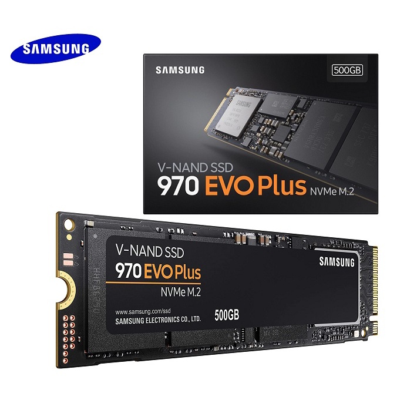
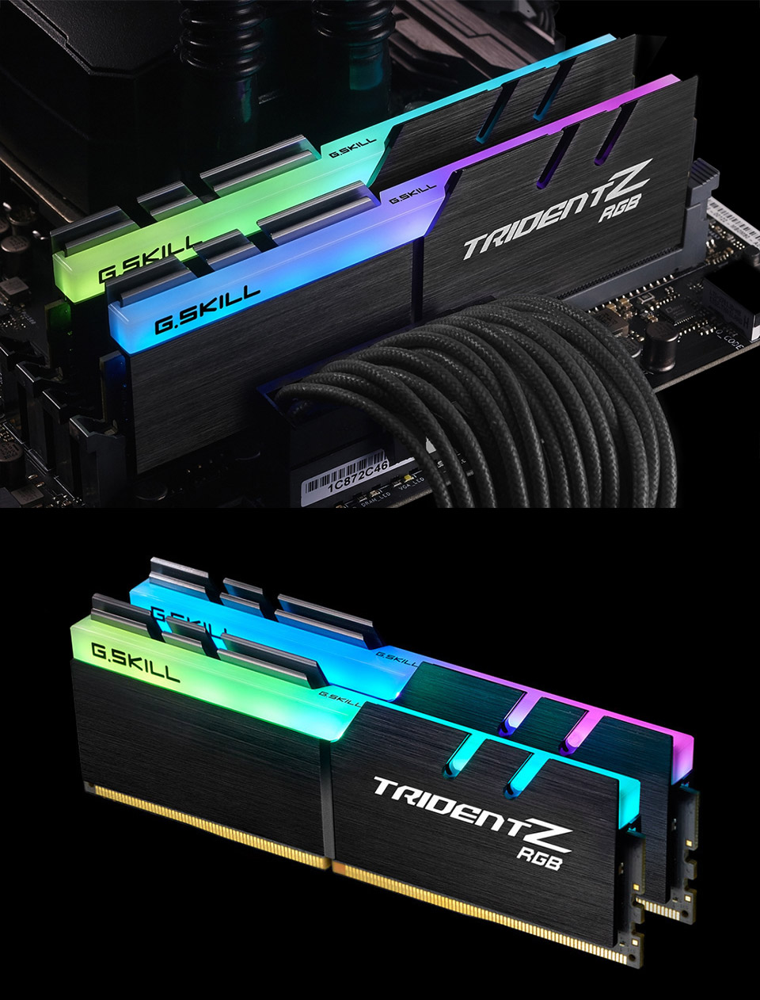

Central Processing Unit
Graphic Processing Unit
Solid State Drive
Random Access Memory




It is the brain of the computer. It is the part that does most of the work in a computer system. Just like how our brain controls our body and processes information, the CPU carries out instructions from programs and performs calculations. It’s made up of smaller components that work together to execute tasks, making it the heart of any computing device.
GPUs were originally designed to accelerate the rendering of 3D graphics. Over time, they became more flexible and programmable, enhancing their capabilities. This allowed graphics programmers to create more interesting visual effects and realistic scenes with advanced lighting and shadowing techniques. Other developers also began to tap the power of GPUs to dramatically accelerate additional workloads in high performance computing (HPC), deep learning, and more.
An SSD, or solid-state drive, is a type of storage device used in computers. This non-volatile storage media stores persistent data on solid-state flash memory. SSDs replace traditional hard disk drives (HDDs) in computers and perform the same basic functions as a hard drive. But SSDs are significantly faster in comparison. With an SSD, the device's operating system will boot up more rapidly, programs will load quicker and files can be saved faster.
Random Access Memory is the familiar acronym for random access memory, which is the temporary storage in your computer that gives applications a place to store and access data on a short-term basis. Having more RAM means that more data can be accessed and read almost instantly, as opposed to being written on your hard drive or SSD.